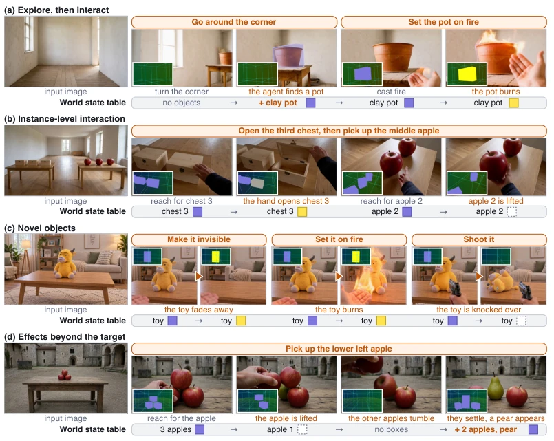
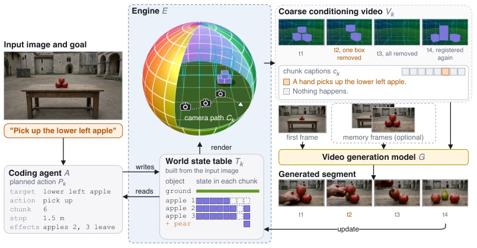
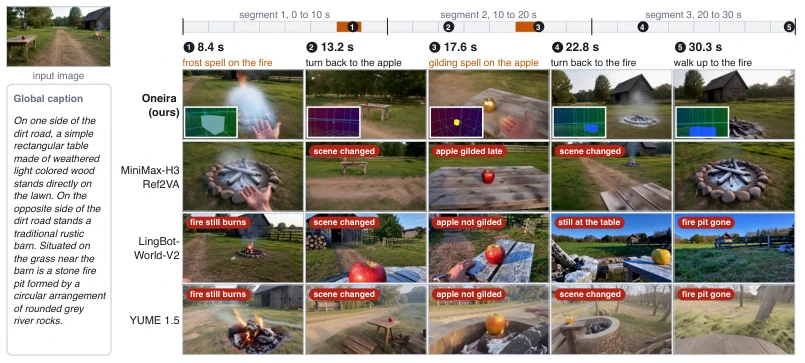
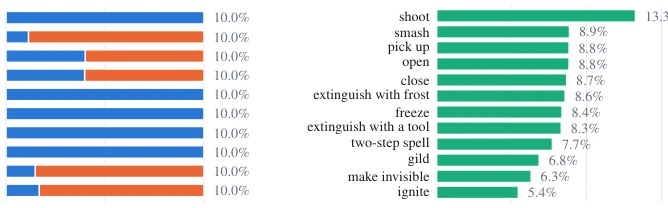
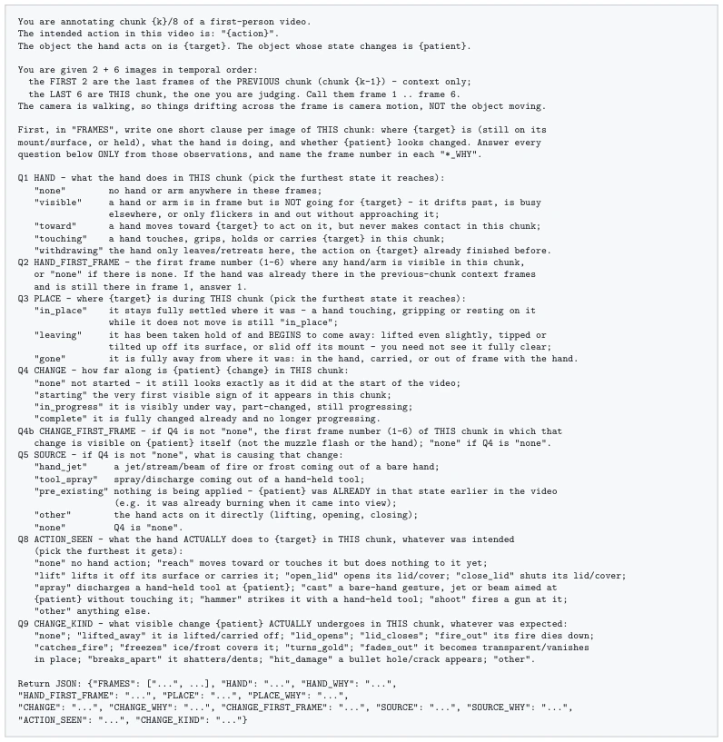
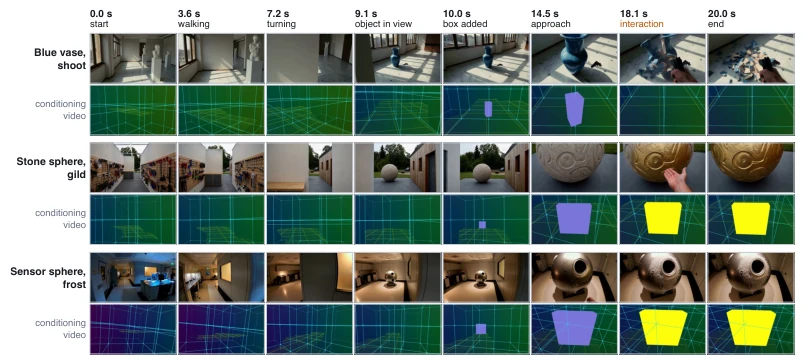
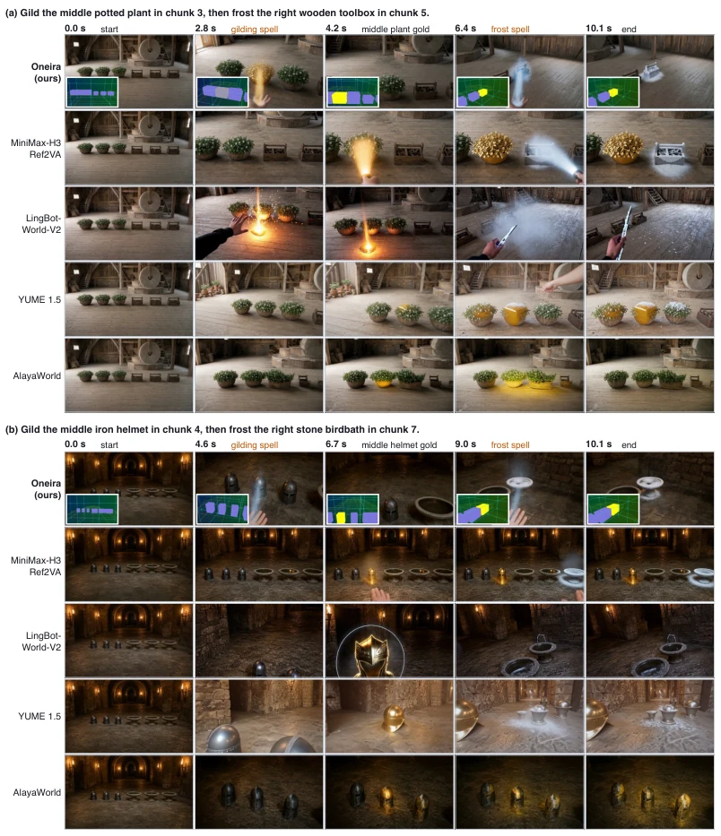

ONEIRA injects an "explicit state table" into video generation models, attempting to solve the common ailment of generated worlds having "poor memory" and "inability to interact with new things". This approach is quite appealing, decoupling "logic" and "appearance", using a Coding Agent to manage world evolution and the video model to manage rendering. Indeed, newly appearing apples can be picked up and remembered afterwards, which is far superior to models that merely roll around in pixels. However, do not get too excited; the action space remains discrete, physics effects rely entirely on the video model's "hallucination", falling far short of true physical simulation. Moreover, relying on large model Agent planning, the inference cost is estimated to be substantial, and real-time performance is hard to guarantee. It counts as adding an "add-on" to the video world model, but whether the add-on runs stably depends on the underlying strength of the video foundation, after all, "appearance" still determines the final visual experience.
研究动机Motivation
现有生成式视频世界模型（如 Valevski et al., 2025; Decart et al., 2024）虽能生成开放环境，但交互能力受限。核心问题在于“开放世界交互性”和“持久状态”缺失。新生成的物体往往只是视觉幻觉，无法成为后续操作的目标；交互后果也常随视频片段结束而消失，无法持久化。传统模拟器虽有显式状态，但资产固定，无法动态扩展。ONEIRA 旨在填补这一空白，让生成的世界不仅“看起来真”，还能“玩起来真”，确保新实体可被操作，且操作后果能跨片段持久影响后续观察。
Existing generative video world models (e.g., Valevski et al., 2025; Decart et al., 2024) can generate open environments, but interaction capabilities are limited. The core problem lies in the lack of "open world interactivity" and "persistent state". Newly generated objects are often merely visual hallucinations, unable to become targets for subsequent operations; interaction consequences often vanish as the video clip ends, unable to persist. Traditional simulators have explicit states, but assets are fixed and cannot be dynamically expanded. ONEIRA aims to fill this gap, making the generated world not only "look real" but also "play real", ensuring new entities are operable, and operation consequences can persistently affect subsequent observations across clips.

Figure 1: ONEIRA conditions video generation on an explicit world state table that a coding agent updates. Given an input image and a goal, the agent plans each interaction and writes its outcome into the table, and the video model renders the updated state into realistic video. This design enables navigation and interaction beyond the input image (a), instance-level control (b), generalization to novel objects (c), and effects beyond the target object (d). The small image in the corner of each frame shows the coarse conditioning video rendered from the table. Purple marks the default state, yellow a changed state, and a dashed outline a box removed from the table.
方法Method
ONEIRA 的架构核心在于将世界演化与视觉实现解耦。首先，Coding Agent 作为“世界大脑”，读取当前世界状态表与输入图像，结合用户目标规划具体动作序列。其次，Engine 引擎负责执行这些动作，更新显式的世界状态表，记录物体的语义标签、3D 边界框、空间位置及交互状态，并将这些结构化信息渲染为包含相机路径和物体框变化的粗略条件视频。最后，预训练的视频生成模型 G 接收首帧、条件视频及分块描述，填充细节纹理与运动。训练阶段，通过微调使生成器学会遵循状态约束，确保生成的视频在物体存在性、状态变化及时间点上与状态表一致。这种设计使得新探索到的物体能被注册进状态表，而交互后果能跨片段持久保留，实现了生成与交互的闭环。
The core of ONEIRA's architecture lies in decoupling world evolution and visual realization. First, the Coding Agent acts as the "world brain", reading the current world state table and input image, combining user goals to plan specific action sequences. Second, the Engine is responsible for executing these actions, updating the explicit world state table, recording object semantic labels, 3D bounding boxes, spatial positions, and interaction states, and rendering these structured information into a rough conditional video containing camera paths and object box changes. Finally, the pre-trained video generation model G receives the first frame, conditional video, and patch descriptions, filling in detailed textures and motion. During the training phase, fine-tuning enables the generator to learn to follow state constraints, ensuring the generated video is consistent with the state table in terms of object existence, state changes, and timing points. This design allows newly explored objects to be registered into the state table, while interaction consequences can be persistently retained across clips, achieving a closed loop of generation and interaction.

Figure 2: Pipeline of ONEIRA for one segment. Given the input image and a goal, the coding agent A reads the world state table and plans each action Pk. The engine E writes each planned action into the table and renders the result Tk along the camera path Ck as the coarse conditioning video Vk (Section 3.2). An interaction appears as a change of the object box, such as its removal or recoloring. Objects that the interaction moves lose their boxes and are registered again from the generated frames once they come to rest, as are objects that it uncovers. The video model G generates the segment conditioned on the first frame, optional memory frames, Vk, and the chunk captions ck (Section 3.3). The last frame and the updated table start the next segment. The sphere is a schematic. The conditio
实验Experiments
构建 InteractionBench 评测，含 100 个交互案例和 50 个记忆案例。基线包括 MiniMax-H3 Ref2VA、LingBot-World-V2、YUME 1.5 等。指标涵盖交互成功率、时间精度、目标准确性及记忆一致性（PSNR/SSIM/State）。ONEIRA 在交互三项指标上均最高（Interaction 0.78 vs 0.49），记忆部分 PSNR 提升 93%。消融实验显示，移除 3D 框或条件视频会导致交互和目标准确率大幅下降，证明显式状态引导的关键作用。
Construct InteractionBench evaluation, containing 100 interaction cases and 50 memory cases. Baselines include MiniMax-H3 Ref2VA, LingBot-World-V2, YUME 1.5, etc. Metrics cover interaction success rate, temporal accuracy, goal accuracy, and memory consistency (PSNR/SSIM/State). ONEIRA is highest in all three interaction metrics (Interaction 0.78 vs 0.49), memory part PSNR improved by 93%. Ablation studies show that removing 3D boxes or conditional video leads to a significant drop in interaction and goal accuracy, proving the key role of explicit state guidance.

Figure 3: Qualitative comparison on a 30-second chain of three segments. The label above each column gives the action at that moment, orange cells mark the chunks whose captions carry an interaction, and the insets show the conditioning video of ONEIRA. Red tags name the failure in a baseline frame. ONEIRA controls both interactions at the specified chunks and maintains the changed states when the camera turns back.
其他图片Other Figures

Figure 5: Composition of the training set. Left, the share of navigation clips per category of camera motion and their source. Right, the share of interaction clips per action category.

Figure 6: The prompt of the VLM judge for one chunk. Placeholders in braces are filled per case, and the questions on hand-held tools and two-step spells are omitted.

Figure 7: Interaction with unseen objects. The target is absent from the first frame and comes into view while the camera explores in the first segment. The coding agent adds it to the world state table before the second segment, so its box appears in the conditioning video from then on, and a hand interacts with it. The row under each chain is its conditioning video.

Figure 8: Interaction with identical objects. Each scene holds two kinds of objects, three identical objects of each kind, and two chunk captions name one object each by its place in the row. Insets show the conditioning video of ONEIRA, and orange labels mark the interaction columns.